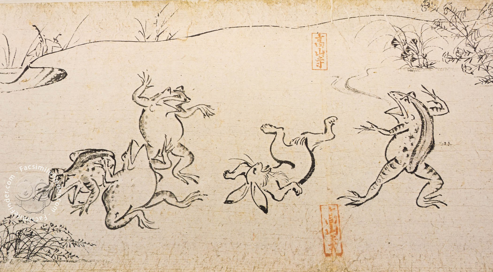

From Emakimono to Hokusai
Manga traces its ancestry to 12th-century Emakimono (scrolls). The Chōjū-jinbutsu-giga is widely considered the earliest predecessor of sequential art in Japan.
By the 1890s, the term "Manga" began referring to cartooning, but it was the 1920s translations of American comic strips that introduced the speech-balloon format we recognize today.

Gekiga: Dramatic Pictures
Rising in the late 1950s, Gekiga redefined manga as a serious medium for adults. Led by Yoshihiro Tatsumi, it rejected "Disney-style" whimsy for grit and realism.
- Social Protest: Focused on class struggle and the working class.
- Cinematic Style: Dynamic pacing that mirrored film noir.
- Global Equivalent: Japan's answer to the "Graphic Novel."
Demographic Specialization
The four pillars of manga publishing that categorize the global industry.
Shōnen
Aimed at young males. Focuses on action, adventure, and the "hero's journey."
Shōjo
Aimed at young females. Known for emotional depth, relationships, and "picture poems."
Seinen
Aimed at adult men (18-30+). Explores psychology, violence, and complex politics.
Josei
Aimed at adult women. Deals with adult life, realistic romance, and career struggles.
The Historian's Library
Deepen your understanding with these essential texts on Manga history: